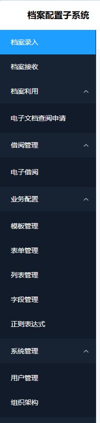
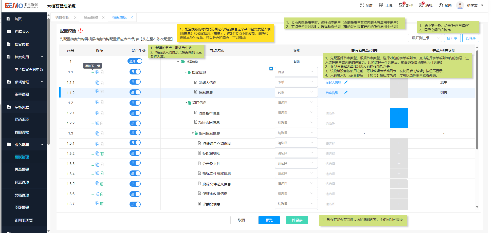
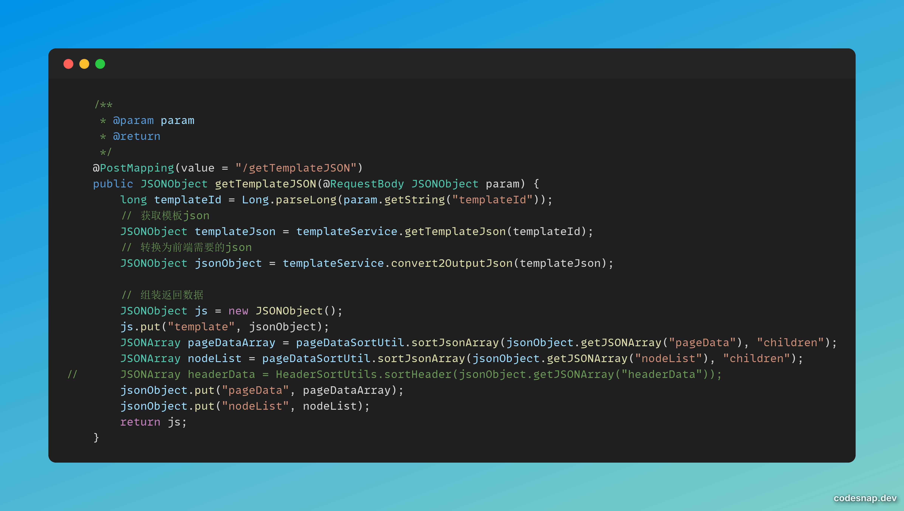
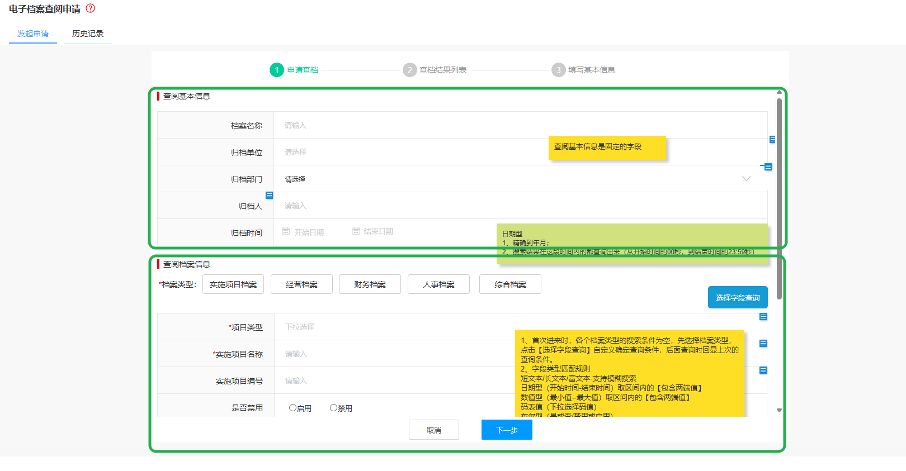
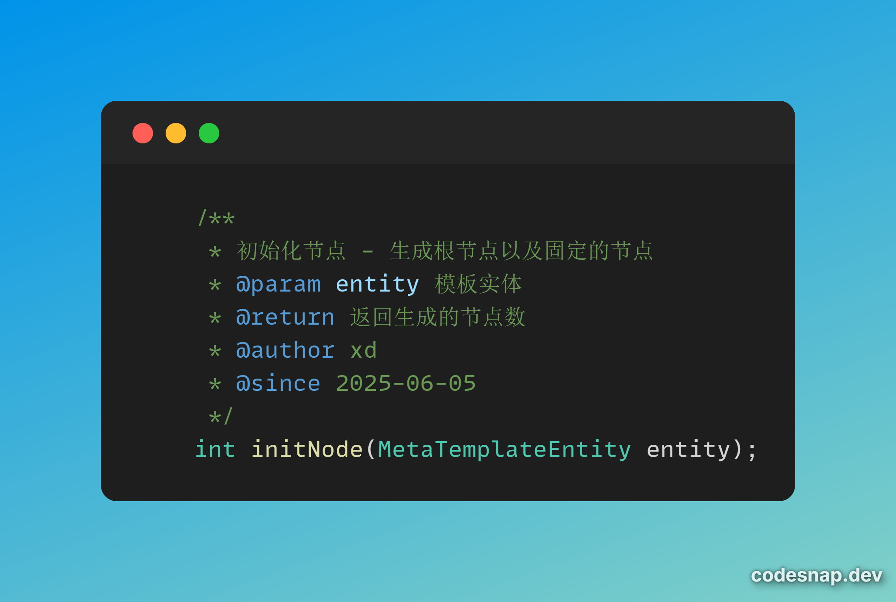
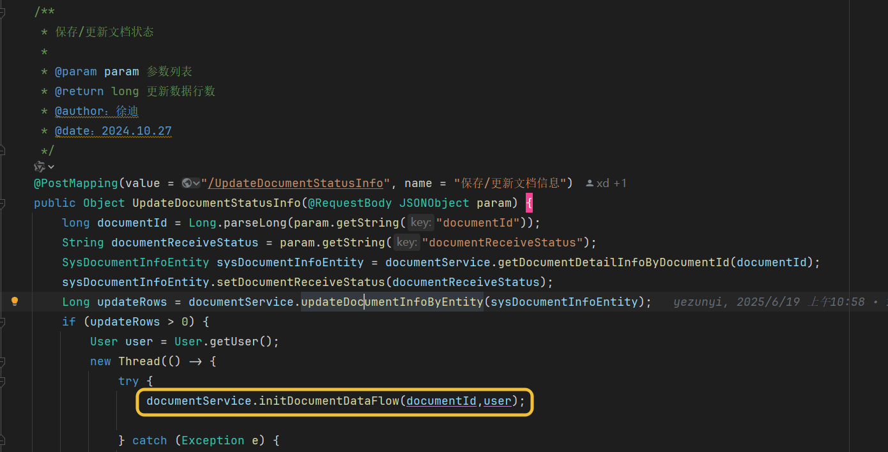

档案系统交接文档
本文档用于档案系统的交接说明。
系统概述
概述
档案现在的目录结构如图所示:

业务配置模块
-
业务配置下五个模块，其中正则表达式是相对独立的，供后续校验字段信息用的，现在并没有实际应用，
checkRuleInfo这个接口是用来校验正则的，提前准备好了，但并没使用 -
剩下几个模块：字段构成列表/表单，列表/表单又构成模板，他们都是1对多的
-
在这个页面，点暂保存或者预览的时候，这个模板对应的那套
json才真正生成，而且只是骨架，并没有填值进去。

-
一个模板对应很多节点，节点类型分为目录和列表/表单（所以这是一个很经典的树结构，自然而然的我们想到，可以用
DFS来遍历树结构，从而维护这套json）。generate4TemplateJSON这个接口是用来生成上述json的，对于列表/表单，因为数据格式不一样，所以单独抽象出来了两个方法（generateDescripeData和generateGridData）来生成对应的数据。并且，在生成gridData的时候，header也是单独拎出来的。 -
因为业务需要，前端传给后端的
json和后端给前端的json其实是有一些差异的，所以又抽象出来了两个方法：convert2TemplateJson: 将前端传的JSON转换为符合标准的JSONconvert2OutputJson: 将档案系统的JSON转化为前端需要的json
-
由于起初写
json生成的接口的时候自然而然的想到了用单调栈，导致后续出现乱序问题，为了解决这个问题，又有了pageDataSortUtil这个排序的工具类，可以参考这个接口：

档案录入 && 档案接收
- 上文提到，模板管理生成的
json只是一个骨架，而这里就是往里面填充数据的过程。需要注意的是：虽然这里是从模板那张表里面取json，但写的时候是写到sysDocument表中的
电子档案查阅申请
-
这里分为两部分，发起申请和历史记录，历史记录部分的后端接口是左之星负责的，这里不作叙述
-
对于发起申请部分：

因为想要实现的是“动态参数查询”，但是又把一些东西拎出来作为固定的东西了，因此这个界面上下两部分分别对应不同的接口，之后再结合在一起调 queryFormListByDocumentType 接口，从而返回对应的 document数据
又及，“固定”类型的表单、字段是维护好的，并且在创建模板的时候就已经挂到对应的模板下面了，对应这个接口 
- 需要着重强调的是：在更新/保存文档信息的时候，我们调了
initDocumentDataFlow这个接口。 这个接口用来反向解析上述那套json，因此在查档的时候，我们其实查的是field_data这张表的数据。

地址
-
原型地址：http://172.16.0.59/档案管理系统/云档案管理系统/V1.1.1
-
档案测试环境：https://c.nenggongshe.com/DxDocumentAdmin/#/home
-
生产环境： https://www.dxsz.cn/DxDocumentAdmin/#/login
-
演示环境1：https://one.dxsz.cn/DxDocumentAdmin/#/login
-
演示环境2： https://two.dxsz.cn/DxDocumentElevatorAdmin/#/login